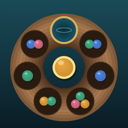

Privacy Policy
Sowstone has no account, no server of its own, no advertising and no analytics or tracking, and it does not use the internet for gameplay. The developer receives none of your data.
What is stored on your device
- The run in progress (one save slot), your records (wins, best scores per difficulty, best daily scores for recent days) and your settings (sound, haptics, hints, animation speed, tutorial done).
- Whether the Full Game has been purchased, as a cached copy of what StoreKit reports.
This data stays in the app’s own storage on your iPhone or iPad. Whether it is included in device backups such as iCloud Backup follows your iOS settings.
Purchases
The Full Game is bought through the App Store. Sowstone checks the purchase with Apple’s StoreKit on the device; the developer receives no payment details or personal information.
Daily run
The Daily run is generated on the device from the local date. No scores are uploaded and there is no leaderboard.
Deleting your data
Settings › Reset records clears your records. Deleting the app removes all of its data.
Children
Sowstone collects no personal information from anyone, including children.
App Store privacy label
Data Not Collected.
Contact: ppupy1200@gmail.com · Effective October 2026
한국어
Sowstone에는 계정, 자체 서버, 광고, 분석·추적이 없고 게임에 인터넷을 쓰지 않습니다. 개발자는 사용자의 어떤 데이터도 받지 않습니다.
- 기기에 저장되는 것: 진행 중인 판(저장 칸 1개), 기록(난이도별 승리·최고 점수, 최근 오늘의 판 최고 점수), 설정(소리·햅틱·힌트·애니메이션 속도·튜토리얼 완료), 그리고 StoreKit이 알려 준 정식판 구매 여부의 사본입니다. 모두 이 기기의 앱 저장 공간에만 남으며, iCloud 백업 등 기기 백업 포함 여부는 iOS 설정을 따릅니다.
- 구매: 정식판은 App Store에서 결제되며, 앱은 기기에서 Apple StoreKit으로 구매를 확인합니다. 개발자는 결제 정보나 개인정보를 받지 않습니다.
- 오늘의 판: 기기의 날짜로 기기에서 만듭니다. 점수를 업로드하지 않으며 순위표가 없습니다.
- 삭제: 설정 › 기록 초기화로 기록을 지울 수 있고, 앱을 삭제하면 모든 데이터가 지워집니다.
- App Store 개인정보 라벨: 데이터를 수집하지 않음.
문의: ppupy1200@gmail.com · 2026년 10월 시행